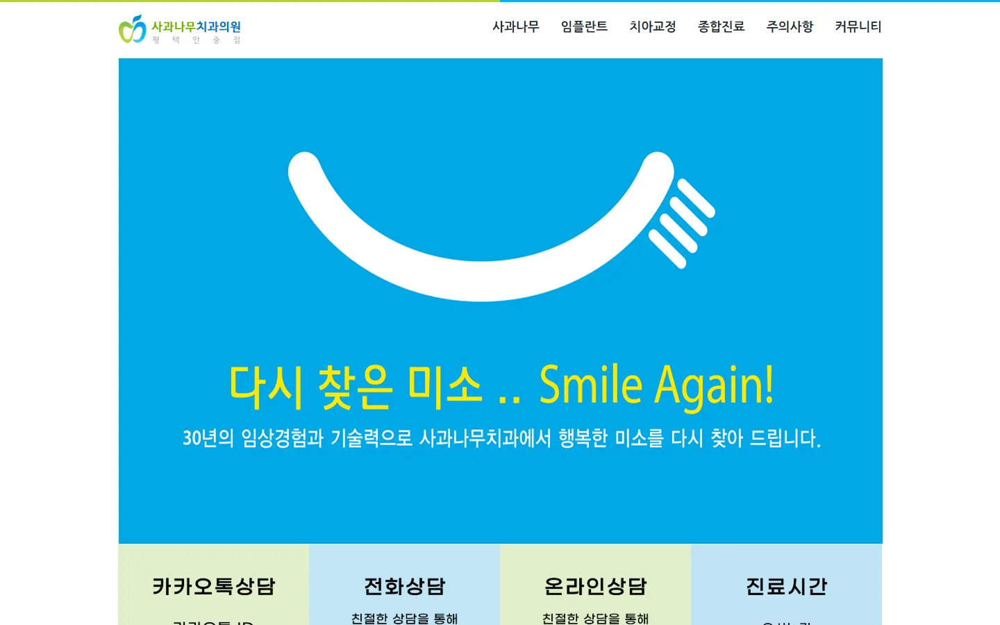
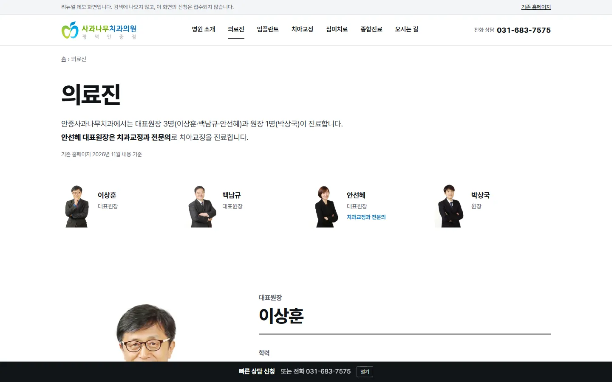
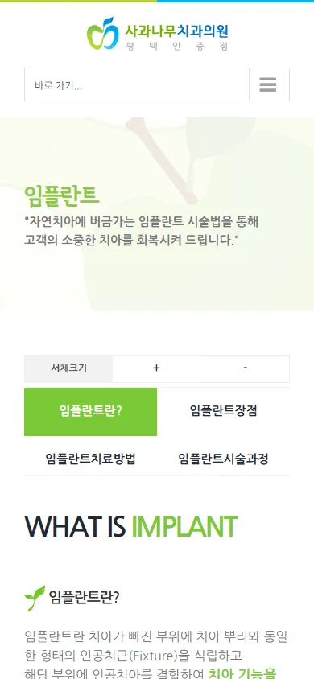
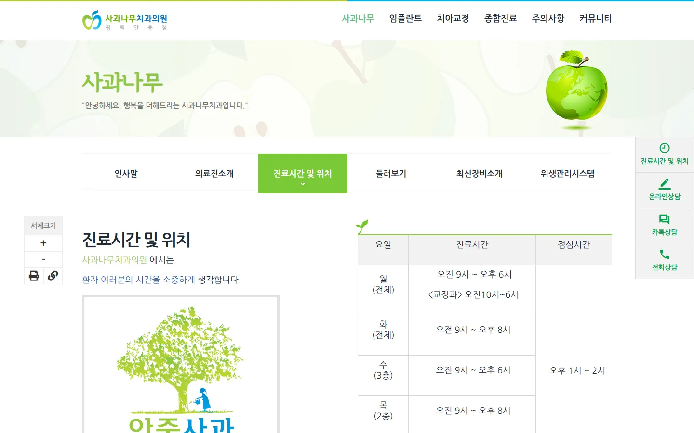
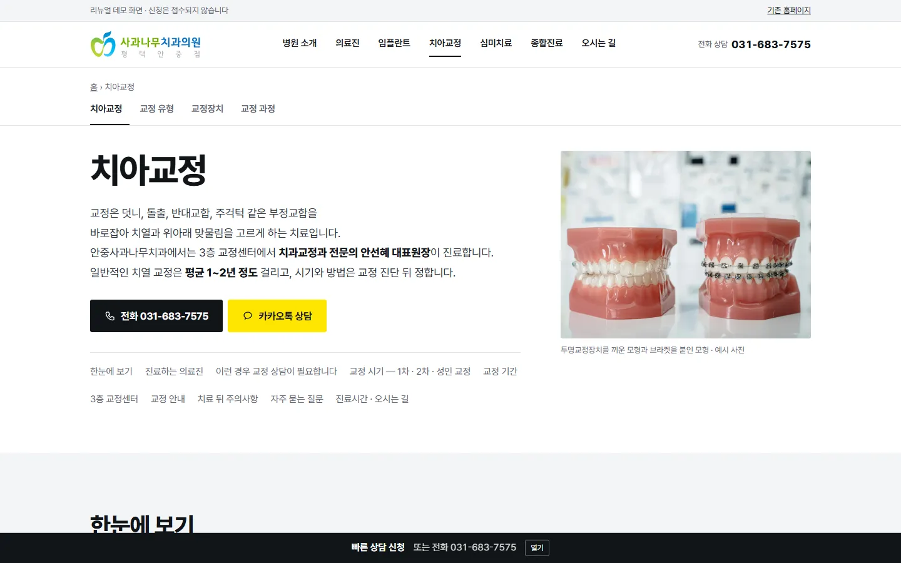
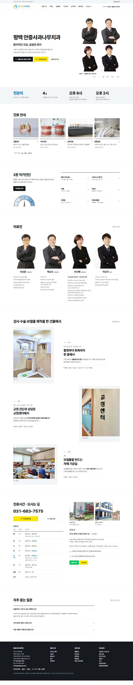
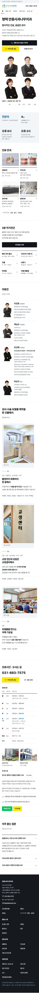

잰 값
점수로 묶지 않고 항목마다 잰 값을 그대로 적었습니다.
| 항목 | 기존 | 새 홈페이지 | 잰 방법 |
|---|---|---|---|
| 보안 연결 | https 주소가 열리지 않고 http 만 열림 인증서 오류 | https 로 바로 열림 응답 200 · 인증서 정상 | 주소를 직접 열어 응답과 인증서 확인 |
| 제목(H1)이 하나인 쪽 | 29 / 61쪽 홈은 제목 0개 | 54 / 54쪽 | 쪽 HTML 의 h1 개수. 기존은 11월 25일 받아 둔 원본 61쪽 |
| 구조화 데이터 | 0 / 61쪽 | 54 / 54쪽 자주 묻는 질문(FAQPage) 40쪽 · 문답 67개 | application/ld+json 이 있는 쪽 수 |
| 쪽 설명 | 0 / 61쪽 | 54 / 54쪽 | 검색 결과·AI 요약에 쓰이는 쪽 설명이 있는 쪽 수 |
| sitemap · robots · llms.txt | 셋 다 없음 sitemap.xml 404 · robots.txt 404 · llms.txt 404 | 셋 다 있음 사이트맵 주소 54개 · llms.txt 쪽 54개 · robots.txt 는 데모라 지금은 전체 차단 | 주소마다 응답 코드, 새 쪽은 파일 안 주소 수 |
| 그림 속 글자 → 글자 | 비급여 진료비 · 제증명 수수료 · 기구 멸균 순서 · 핸드피스 관리 · 교정과 안내가 그림 안 글자 | 5가지 모두 화면 글자 비급여 28행 · 제증명 10행 · 멸균 8단계 · 핸드피스 5단계 · 교정 전문의 안내 | 원본 그림과 새 쪽 글자를 칸마다 대조 |
| 의료광고 위험 표현 | 30곳 16쪽 · 기간 단축·치료끼리 견줌 10 · 비교·최상급 8 · 장비·공간 과장 7 · 과장·최상급 3 · 명칭 1 · 효과 보장·오인 1 | 0곳 | 같은 점검기 |
| 휴대폰 첫 화면 표시(LCP) | 16.2초 | 1.1초 | 같은 PC·크롬, 390×844 휴대폰 흉내, 1.6Mbps 회선에 왕복 지연 150ms, CPU 4배 느리게, 캐시 없음, 측정 도구 막음, 3번 잰 가운데 값. 새 홈페이지는 공개 주소 |
홈
기존

새 홈페이지

기존 · 휴대폰
새 · 휴대폰

- 제목(H1) 0개 → 1개
- 구조화 데이터 없음 → WebSite, Dentist, WebPage
- 대체 글 없는 그림 13장 → 0장
- 쪽 설명
(meta) 없음 → 있음
의료진
기존
새 홈페이지

기존 · 휴대폰
새 · 휴대폰

- 제목(H1) 5개 → 1개
- 구조화 데이터 없음 → Dentist, AboutPage, Person, BreadcrumbList
- 대체 글 없는 그림 5장 → 0장
- 쪽 설명
(meta) 없음 → 있음
임플란트
기존

새 홈페이지

기존 · 휴대폰

새 · 휴대폰

- 제목(H1) 2개 → 1개
- 구조화 데이터 없음 → Dentist, MedicalWebPage, MedicalProcedure, FAQPage, BreadcrumbList
- 대체 글 없는 그림 8장 → 0장
- 쪽 설명
(meta) 없음 → 있음
진료시간 · 오시는 길
기존

새 홈페이지

기존 · 휴대폰
새 · 휴대폰
- 제목(H1) 3개 → 1개
- 구조화 데이터 없음 → Dentist, ContactPage, BreadcrumbList
- 대체 글 없는 그림 17장 → 0장
- 쪽 설명
(meta) 없음 → 있음
치아교정
기존

새 홈페이지

기존 · 휴대폰
새 · 휴대폰

- 제목(H1) 2개 → 1개
- 구조화 데이터 없음 → Dentist, MedicalWebPage, MedicalProcedure, FAQPage, BreadcrumbList
- 대체 글 없는 그림 1장 → 0장
- 쪽 설명
(meta) 없음 → 있음
홈 전체
틀 안을 내려 보세요. PC는 절반 크기입니다(실제 높이 기존 1,517px · 새 7,350px).
기존

새 홈페이지

기존 · 휴대폰

새 · 휴대폰
